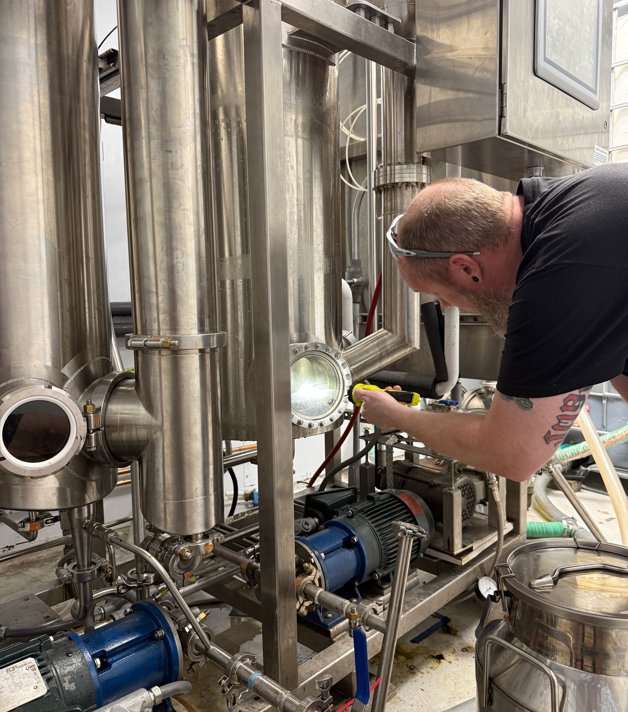
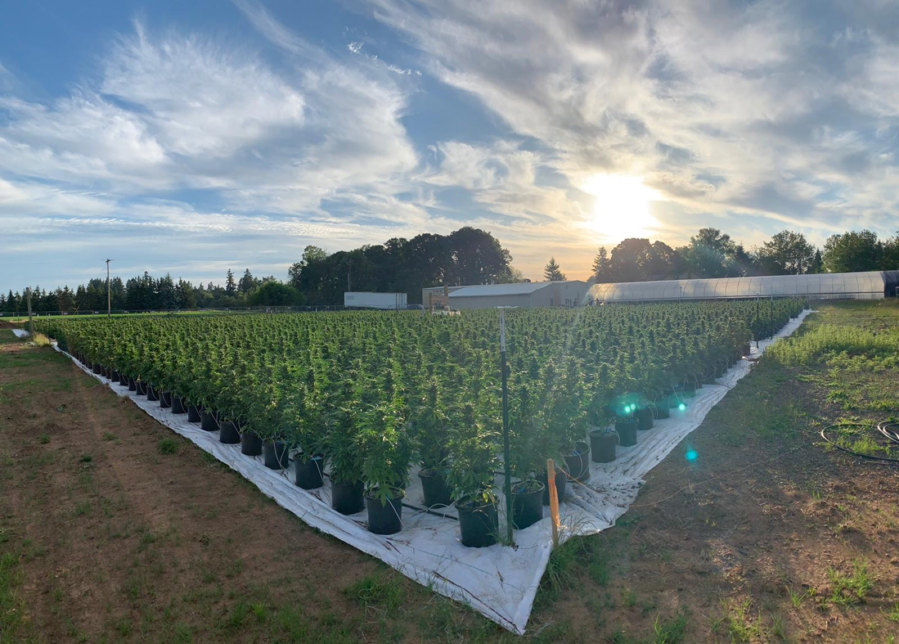
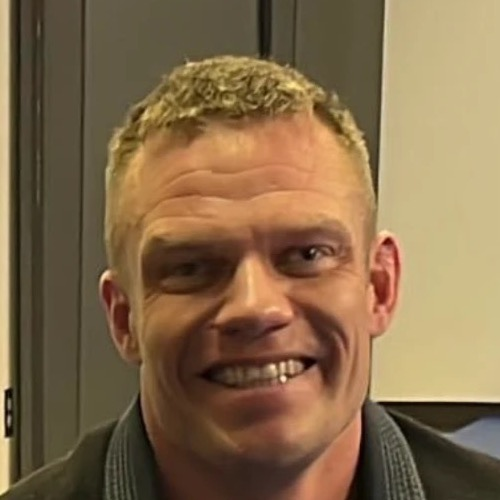
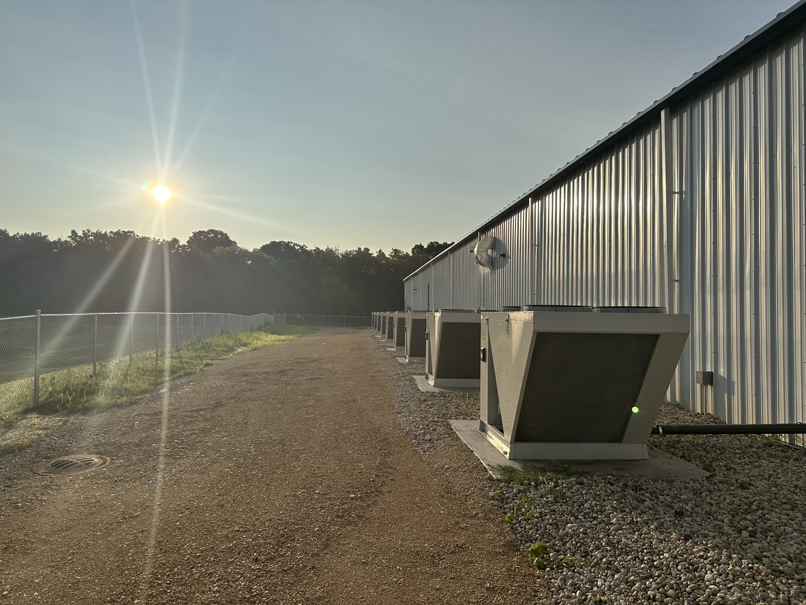

Pressure-test the plan
We challenge throughput assumptions, staffing models, room flow, SKU selection, and market expectations before capital gets trapped in the wrong build.
Cannabis extraction consulting and operations
We help cannabis operators build mature companies before the market makes immature ones too expensive to survive.
Mission
We have watched the Oregon cannabis industry mature through early energy, fast builds, thin systems, and margin compression.
As markets tighten, the separation becomes clear: companies with real operating discipline keep improving while companies that are still improvising get exposed.
ExtractOS exists to bring those lessons to operators before they repeat the same mistakes. When a market matures, mature companies are the only ones that survive. That means teams are usually more under the gun than they realize.
Turn hard-won cannabis operating experience into facilities, teams, and software systems that can survive a real market.
Our method
We start with the mistakes that show up again and again in maturing cannabis markets, then design the operation around avoiding them.
We challenge throughput assumptions, staffing models, room flow, SKU selection, and market expectations before capital gets trapped in the wrong build.
Facility planning connects equipment, compliance, cleaning, storage, labor, and actual production rhythm instead of treating the room like a shopping list.
Extraction performance starts upstream. We help align strain selection, harvest timing, biomass quality, and input consistency with the products the market will reward.
Operators need more than SOP binders. We use SOPs and work instructions to optimize new facilities, then support the handoff with training, run discipline, maintenance rhythm, and decision habits that hold up on busy days.
Software has to show what is happening on the floor: yields, downtime, inventory, labor, loss, and the few numbers that determine whether the operation is healthy. We integrate SOPs into tools each operator can access, with remote technical support to help keep performance on track.
We do not disappear at launch. We stay close enough to manage, measure, and improve the operation while the market keeps tightening.

Built and run, not just advised
We know the failure patterns. Oregon showed what happens when facilities scale without enough operating discipline underneath them.
We have lived the volume. Owen helped build one of Oregon's leading extract and vape brands, with millions of units sold through a market that kept getting more demanding.
We understand the inputs. That operating view extends upstream, from designing and running a 27,500-square-foot indoor craft grow in Illinois to building the team and process behind award-winning flower.
We connect the full system. Cultivation, extraction, labor, compliance, sales reality, and software are treated as one operating model.
We prepare for compression. The method assumes prices tighten, buyers get sharper, and mistakes compound faster than the team expects.
Work in the field
Real grow rooms, extraction equipment, production spaces, and field conditions shape how ExtractOS helps extraction companies and brands connect inputs, throughput, product quality, and accountable operations.

Facilities, grow rooms, equipment, and production environments from the operating experience behind ExtractOS.

Founder
Founder - Oregon
Owen brings the operator's view from Oregon cannabis into extraction: building scaled extract and vape brands, designing cultivation operations from site selection through brand and packaging, facility design, grow performance, extraction workflow, team training, and the software layer that keeps the operation honest when the market stops forgiving mistakes.

Let's talk
Build the tools, training, and operating system your next market stage will require.
Start the conversation